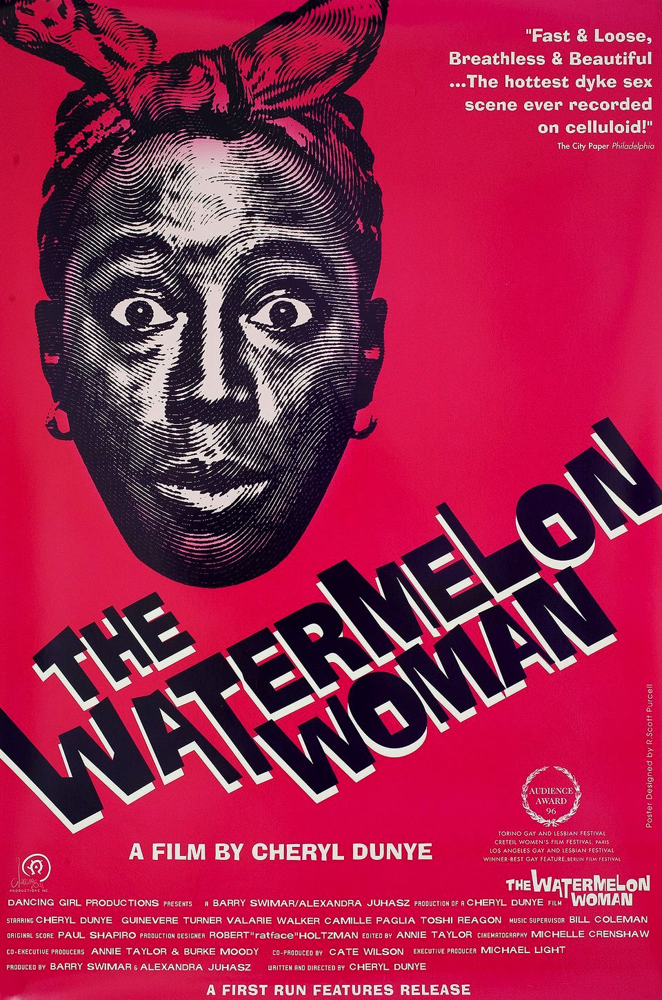

Find here a selection of moving image media and interviews hand-picked by our LUVA family
Original video by Connell Guides
"In Warsaw, a pair of mermaid sisters are adopted into a cabaret. While one seeks
love with humans the other hungers to dine on the human population of the city.
Director: Agnieszka Smoczynska" - IMDb
Original video by BD Horror Trailers and Clips

"Cheryl Dunye plays a version of herself in this witty, nimble landmark of New Queer Cinema.
A video store clerk and fledgling filmmaker, Cheryl becomes obsessed with the "most beautiful mammy," a
character she sees in a 1930s movie. Determined to find out who the actress she knows only as the "Watermelon
Woman" was and make her the subject of a documentary, she starts researching and is bowled over to discover that
not only was Fae Richards (Lisa Marie Bronson) a fellow Philadelphian but also a lesbian."
Available on Kanopy HERE